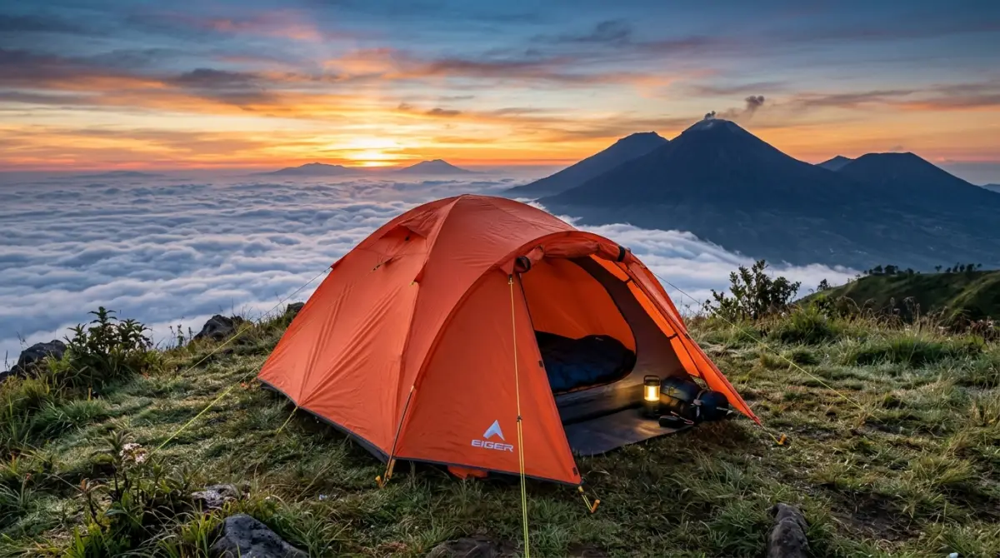
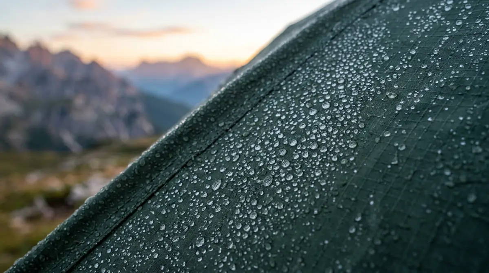

Memilih tenda kemah terbaik adalah investasi perlindungan agar kamu bisa menikmati sunrise dengan tubuh bugar di pagi hari.Bayangkan skenario ini: Kamu sudah mengajukan cuti jauh-jauh hari, menempuh perjalanan berjam-jam dari kota yang sumpek demi sebuah janji manis melihat sunrise di dataran tinggi Batu atau Malang. Namun, alih-alih terbangun dengan segar, kamu justru menghabiskan sepanjang malam menggigil kedinginan, tidak bisa memejamkan mata sedetik pun karena angin gunung menembus dinding tendamu yang setipis kertas.
Ketika matahari terbit, kamu terlalu sibuk menahan gigit jari dan sakit kepala hingga lupa menikmati momen magis yang sudah kamu bayar mahal dengan waktumu. Jangan biarkan jatah liburmu yang berharga berujung pada penyesalan dan masuk angin yang memaksamu mengambil cuti sakit di hari Senin. Waktu dan kenyamananmu terlalu berharga untuk dipertaruhkan. Memilih tenda kemah terbaik untuk cuaca dingin bukan sekadar urusan gaya, melainkan investasi perlindungan mutlak agar pelarian akhir pekanmu benar-benar menjadi momen pemulihan yang sempurna.
Mengapa Tenda "Biasa Saja" Adalah Bencana di Pegunungan?
Di dunia kerja, kita terbiasa menghadapi dinginnya AC ruang meeting yang diputar hingga 18 derajat Celcius. Kamu mungkin merasa kebal. Namun, cuaca pegunungan, terutama di kawasan dataran tinggi seperti lereng pegunungan di Batu dan sekitarnya, memiliki karakter yang sama sekali berbeda. Suhu udara memang mungkin berada di angka 15 derajat, tetapi ada faktor yang sering diabaikan oleh pendaki pemula: wind chill atau efek pendinginan angin.
Angin gunung yang berhembus konstan bisa membuat suhu yang dirasakan tubuh (feels like) turun drastis hingga mendekati satu digit. Membawa tenda pantai atau tenda single layer (satu lapis) murahan ke lingkungan seperti ini ibarat datang ke medan perang hanya bermodalkan payung kertas.
Berdasarkan pengalaman dan uji lapangan oleh para ahli kegiatan alam bebas, bahan tenda yang tidak sesuai spesifikasi akan membiarkan hawa panas tubuhmu menguap begitu saja, sementara hawa dingin dari luar bebas menerobos masuk. Jika dibiarkan, kondisi ini bukan hanya membuat tidur tidak nyenyak, tetapi sangat berisiko memicu hipotermia—sebuah kondisi medis darurat di mana tubuh kehilangan panas lebih cepat daripada kemampuannya memproduksi panas.
Fitur Wajib yang Dimiliki Tenda Kemah Terbaik untuk Cuaca Dingin
Untuk menjamin pagimu menyambut sunrise diisi dengan senyuman dan secangkir kopi hangat, bukan bibir yang membiru, ada beberapa spesifikasi teknis yang tidak bisa ditawar saat memilih tenda.
1. Material Double Layer: Pemisah Antara Hidup dan Masuk Angin
Ini adalah hukum tidak tertulis yang paling absolut. Tenda kemah terbaik untuk dataran tinggi wajib memiliki konstruksi double layer atau dua lapis. Lapisan dalam (inner) biasanya terbuat dari bahan berpori (mesh/breathable fabric) yang berfungsi membiarkan sisa napas dan uap tubuhmu keluar. Sementara itu, lapisan luar (outer/flysheet) bertugas sebagai perisai utama menahan angin dan embun, biasanya terbuat dari poliester yang dilapisi Polyurethane (PU) tahan air.
Ruang kosong antara lapisan dalam dan luar inilah yang bertindak sebagai insulasi ajaib. Ia menjebak udara hangat dari dalam, sekaligus mencegah embun pagi yang menempel di lapisan luar merembes ke dalam tenda. Tanpa flysheet, napasmu di dalam tenda akan menabrak dinding dingin, mengembun (kondensasi), dan menetes kembali ke wajahmu bak gerimis lokal di dalam tenda. Rasanya persis seperti atap kantormu yang bocor tepat di atas mejamu.
2. Frame Tangguh dan Desain Aerodinamis (Windproof)
Tidak peduli seberapa tebal kain tendamu, jika rangka (frame)-nya mudah melengkung atau patah saat diterjang angin gunung, kamu akan berakhir tertimpa tendamu sendiri. Tinggalkan tenda dengan frame berbahan fiberglass yang rapuh dan mudah pecah saat cuaca membeku. Pilihlah tenda yang menggunakan frame berbahan Aluminium Alloy.
Selain jauh lebih ringan, aluminium memiliki fleksibilitas dan daya tahan yang jauh lebih baik untuk menahan hempasan angin kencang. Secara desain, tenda berbentuk kubah (dome) atau terowongan (tunnel) cenderung lebih aerodinamis dalam membelah angin dibandingkan tenda berbentuk kotak kaku.
3. Vestibule (Teras Tenda): Dapur Darurat Penyelamat Malam
Pernahkah kamu terbangun jam 3 pagi dengan perut keroncongan, tapi di luar angin sedang menderu kencang? Di sinilah vestibule atau teras tenda menunjukkan nilai aslinya. Vestibule adalah ruang ekstra yang dibentuk oleh rentangan flysheet di depan pintu tenda dalam.
Area ini sangat esensial untuk meletakkan sepatu kotor agar tidak embun, dan yang paling penting: menjadi area memasak yang aman dari terpaan angin saat kamu perlu menyeduh mie instan atau air hangat tanpa harus keluar dari kenyamanan tenda.

Tenda double layer dengan frame aluminium alloy adalah standar minimum untuk menghadapi cuaca dingin pegunungan.Rekomendasi Tipe Tenda Kemah Terbaik untuk Menikmati Sunrise
Jika kamu bingung dengan banyaknya merek di pasaran, mari kita kelompokkan beberapa tipe yang sudah teruji keandalannya oleh komunitas penikmat alam di Indonesia.
Tipe Ultralight (Ringan dan Kompak)
Bagi kamu yang lebih suka mobilitas tinggi atau lokasi campground yang mengharuskanmu berjalan kaki (trekking) cukup jauh dari area parkir, tenda jenis ultralight dari brand seperti Naturehike (seri Cloud Up atau Mongar) sangat direkomendasikan. Tenda ini menggunakan material nylon yang sangat ringan namun kuat, dilengkapi frame alloy. Tenda ini ibarat laptop tipis keluaran terbaru: performa maksimal namun tidak membuat tulang punggungmu berteriak minta ampun.
Tipe Heavy Duty (Tangguh dan Luas)
Jika kamu berangkat bersama rombongan divisi kantor dan menyasar area camping yang bisa langsung diakses mobil seperti di Coban Rais atau kawasan Bedengan, kamu bisa mengabaikan masalah berat dan fokus pada kelapangan. Tenda dome kapasitas 4-6 orang dari merek lokal legendaris seperti Eiger, Consina, atau Arei adalah kuda kerja yang tak kenal lelah.
Material poliesternya biasanya lebih tebal, dan rangkanya kokoh menahan cuaca tak menentu. Tenda ini memberikan rasa aman seperti memiliki asuransi kesehatan premium; kamu tahu kamu terlindungi apa pun yang terjadi di luar sana.
"Membeli atau menyewa tenda kemah terbaik bukanlah sebuah pengeluaran konsumtif, melainkan cara kita menghargai tubuh yang sudah bekerja keras berminggu-minggu lamanya."
— Perspektif Pejalan SejatiDukungan Ekstra Agar Tidur Malammu Sempurna
Memiliki tenda yang bagus ibarat memiliki mobil mewah; ia tidak akan berjalan maksimal tanpa bahan bakar yang tepat. Dalam konteks berkemah, dinding tenda hanya bertugas menahan hawa dingin dari udara, namun kamu masih butuh perisai dari suhu dingin yang menjalar dari tanah (konduksi).
Jangan pernah tidur langsung beralaskan lantai tenda. Gunakan matras, minimal matras aluminium foil yang memantulkan panas tubuh, atau lebih baik lagi matras angin (inflatable pad). Padukan dengan kantong tidur (sleeping bag) model mummy yang membungkus tubuh dari kepala hingga kaki. Kombinasi tenda double layer, matras yang tepat, dan sleeping bag yang tebal akan menciptakan kepompong kenyamanan yang akan membuatmu tidur lelap layaknya bayi, jauh dari mimpi buruk soal tenggat waktu pekerjaan.
Persiapkan Perlindunganmu, Beli Waktumu Kembali
Pada akhirnya, hidup ini adalah tentang mengumpulkan momen, bukan sekadar mengumpulkan lembaran uang dari hasil lembur yang tiada akhir. Usia produktif kita terbatas, dan tenaga kita punya batas kedaluwarsa. Jangan sampai niat baikmu untuk mengobati kelelahan mental justru berujung pada penderitaan fisik di atas gunung hanya karena kamu pelit menginvestasikan perlindungan untuk dirimu sendiri.
Membeli atau menyewa tenda kemah terbaik bukanlah sebuah pengeluaran konsumtif, melainkan cara kita menghargai tubuh yang sudah bekerja keras berminggu-minggu lamanya. Berikan dirimu fasilitas yang layak untuk menikmati mahakarya alam. Persiapkan perbekalanmu, pasang tenda andalanmu dengan kokoh, dan biarkan dirimu tenggelam dalam kehangatan saat kabut malam mulai turun. Esok pagi, saat matahari memancarkan sinar keemasannya dari ufuk timur pegunungan Batu, kamu akan berdiri di sana dengan senyum mengembang dan tubuh yang bugar—bersyukur karena kamu telah mengambil keputusan yang tepat.
FAQ — Tenda Kemah Terbaik Cuaca Dingin